Render Assets
When it comes to rendering Asset Preview images, you have two distinct options. You can either utilize Batch Rendering through the BatchGenie panel, or selectively choose Assets from the Asset Browser for which you wish to render previews for. BatchGenie supports rendering previews for materials, collections, and objects, including VDB volumes.
When rendering via the Asset Browser, you can work with both internal and external Assets, so you don't have to open each individual Asset Blend file separately.
Batch Rendering¶
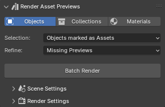
- Open the BatchGenie panel.
- Go to the
Render Asset Previewssection in the panel. - Choose the Asset type you want to render previews for and select the appropriate filters to target the Assets that need previews.
- Configure the scene and render settings as needed.
- Click
Batch Render, and BatchGenie will render all Assets that fit your selection filter.
Rendering via the Asset Browser¶
- Open the Asset Browser.
- Select the Assets you want to render.
- Locate the BatchGenie menu.
- Configure the scene and render settings as needed.
- Click on
Render selected Assetsand BatchGenie will render all selected Assets.
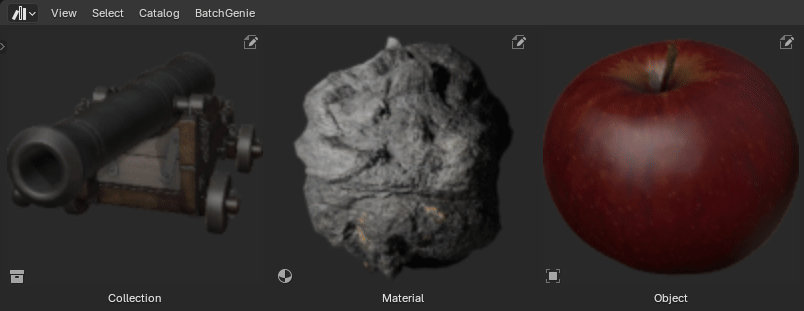
Settings¶
You can access the settings through both the BatchGenie panel and the BatchGenie menu in the Asset Browser.
Asset Selection¶
- Selection: Allows you to specify which objects to include in the rendering process based on predefined criteria. Options listed below:
- Selected Objects: Choose the currently selected object(s) in your scene. When using this option, you have the option to mark the objects as Assets.
- Objects marked as Assets: Objects in the your file that are marked as Assets.
- Objects NOT marked as Assets: Objects in the your file that are NOT marked as Assets.
- All objects: All objects in the your file regardless if they are marked as Assets or not.
-
Refine: Helps you to refine the selection made with the 'Selection' function by applying additional criteria.
- Missing Previews: Selects objects that are missing Asset Previews.
- Low-Quality Previews: Selects objects with existing Asset Previews below 256px in resolution.
- Low-Quality & Missing Previews: Selects objects with existing Asset Previews below 256px in resolution, as well as objects without Asset Previews.
- No Filter (all objects): Selects all objects that match the previous selection without any further filtering.
-
Mark as Asset: Marks the objects as Assets. This option is shown depending on the 'Selection' option. This option can only be disabled if you are saving previews externally (see Render Settings).
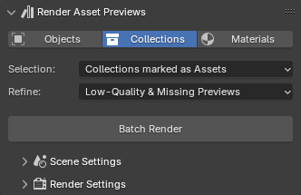
- Selection: Allows you to specify which collections to include in the rendering process based on predefined criteria. Options listed below:
- Selected Collection: Choose the currently selected collection in your scene. When using this option, you have the option to mark the collection as an Asset.
- Collections marked as Assets: Objects in the your file that are marked as Assets.
-
Refine: Helps you to refine the selection made with the 'Selection' function by applying additional criteria.
- Missing Previews: Selects collections that are missing Asset Previews.
- Low-Quality Previews: Selects collections with existing Asset Previews below 256px in resolution.
- Low-Quality & Missing Previews: Selects collections with existing Asset Previews below 256px in resolution, as well as collections without Asset Previews.
- No Filter (all objects): Selects all collections that match the previous selection without any further filtering.
-
Mark as Asset: Marks the collections as Assets. This option is shown depending on the 'Selection' option. This option can only be disabled if you are saving previews externally (see Render Settings).
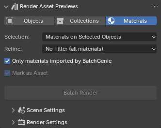
- Selection: Allows you to specify which materials to include in the rendering process based on predefined criteria. Options listed below:
- Materials on Selected Objects: All materials assigned to the the currently selected object(s) in your scene. When using this option, you have the option to mark the materials as Assets.
- Materials marked as Assets: Materials in your file that are marked as Assets.
- Materials NOT marked as Assets: Materials in the your file that are NOT marked as Assets.
- All materials: All materials in your file regardless if they are marked as Assets or not. When using this option, you have the option to mark the materials as Assets.
-
Refine: Helps you to refine the selection made with the 'Selection' function by applying additional criteria.
- Missing Previews: Selects materials that are missing Asset Previews.
- Low-Quality Previews: Selects materials with existing Asset Previews below 256px in resolution.
- Low-Quality & Missing Previews: Selects materials with existing Asset Previews below 256px in resolution, as well as materials without Asset Previews.
- No Filter (all materials): Selects all materials that match the previous selection without any further filtering.
-
Only materials imported by BatchGenie: When enabled, this option ensures that the batch operation only affect materials imported by BatchGenie. Disabling it applies changes to all materials in your file, regardless of their origin.
- Mark as Asset: Marks the materials as Assets. This option is shown depending on the 'Selection' option. This option can only be disabled if you are saving previews externally (see Render Settings).
Scene Settings¶
Choose between ready-to-use Presets for quick setups or Manual mode for full control. You can switch to Manual mode at any time and save your adjustments as custom presets.
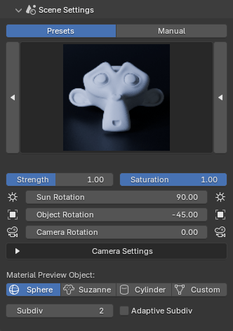
The presets shown below are available starting in version 1.1.5, with plans for fine-tuning and expansion in future updates.
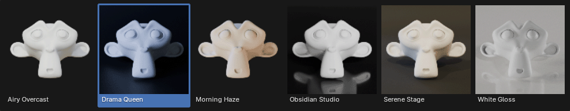
Saving Presets
To save a preset, you need to switch to manual mode.
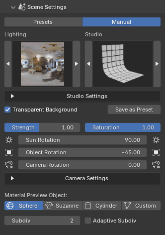
-
Lighting: Choose from a selection of different lighting setups to enhance your renders. Options include various sky setups and HDRIs. There is also a 'Custom World' option that utilizes your scene's current 'World' for lighting, allowing you to use your own HDR images.
Lighting Setups
BatchGenie includes a few built-in HDRIs and also leverages Blender's built-in HDRIs.
-
Studio: Allows you to add a studio backdrop as a background if desired. The studio automatically scales to fit the object you are rendering, ensuring that the background matches your asset's size and position.
Note: Studio Setups are not recommended to be used when rendering VDB volumes. The placement of VDB volumes within the studio can be finicky and may not always work as planned.
Studio Setups
{kind=link}
{kind=link}
Studio Settings
When you select a Studio Setup, the following settings are available:
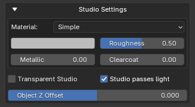
- Material: Choose from the built-in materials, which include some basic options with adjustable settings, or use your own material.
- Transparent Studio: (Cycles Only) Makes the studio backdrop see-through while remaining visible in reflections and bouncing back light to the objects.
-
Studio passes light: Enables the studio to allow light to pass through it, preventing it from blocking light from the world and casting shadows on your Assets.
-
Object Z Offset: Allows you to adjust the object's height after its lowest point has been aligned with the ground. Use a positive value to lift the object above the ground or a negative value to lower it further. The offset is relative to the object or collection's height, making the adjustment proportional to its size.
- Transparent Background: Enables a transparent background in rendered images by toggling the 'Render > Film > Transparent' option for the render scene.
-
Save as Preset: Saves the current scene settings as a preset, allowing you to configure which settings are stored. When saving, BatchGenie will automatically render a preview for the preset, making it visible alongside the built-in presets for easy access.
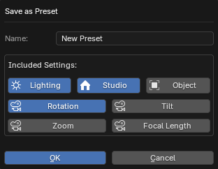 For exact details on which settings are saved, hover your mouse over the buttons to view all the information.
How to delete Presets
Presets that you have created can be removed via Preferences.
- Strength: Adjusts the light strength of the world background.
-
Saturation: Adjusts the saturation of the world background. This setting is useful when you want to use an HDR image for lighting your scene but don't want the colors of the HDR to influence the colors in your final render. By adjusting the saturation, you can desaturate the HDR image, allowing you to retain the lighting effects without the HDR's color affecting your scene's appearance.
-
Rotation:
- Sun Rotation: Adjusts the horizontal angle of the sunlight in your scene or rotates the HDRI background for lighting.
- Object Rotation: Adjusts the rotation of the object.
- Camera Rotation: Adjusts the rotation of the camera. Useful when you want to keep the lights & shadows in their current position but want to change the framing.
Rotation Tip
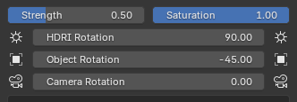 You can also use the icon buttons to the left and right of the slider to adjust them in -/+ 45 degree increments.
Camera Settings
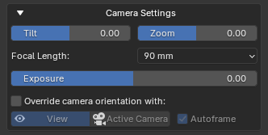
-
Tilt: Adjusts the camera’s tilt, allowing you to change the perspective by angling it up or down
Tilt Example
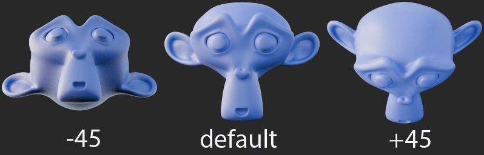
-
Zoom: Adjust the camera distance from the object. Zoom in for a close-up view or zoom out to add space around your object. The zoom is relative to the object or collection's size, making the adjustment proportional to its size.
-
Focal Length: Adjusts the focal length of the camera, affecting the field of view and perspective. A shorter focal length increases the field of view, creating a wide-angle effect, while a longer focal length decreases the field of view, producing a zoomed-in effect.
-
Exposure: Adjusts the overall brightness of your scene by controlling the amount of light that reaches the camera, effectively brightening or darkening the rendered image.
-
Override camera orientation with: Lets you use a custom camera angle. Choose between:
- View: Set the render camera to match the current 3D view's perspective, ensuring the render viewpoint aligns with the 3D viewport
- Active Camera: Set the render camera to the position and orientation of the active camera, ensuring the render viewpoint matches the current active camera's view.
Autoframe: When using the override, the Autoframe option automatically adjusts the camera to frame the selected object perfectly, ensuring that it fits within the view without any clipping. Disable this option for manual framing of your Asset, such as for close-up shots.
Autoframe
-
Autoframe cannot be disabled when rendering materials. However, you can still render selected Assets, and Autoframe will be disabled for all other Assets except materials.
-
If you disable Autoframe and use any of the 'Studio Setups' keep in mind that the location of the object/collection will be set to the world origin (0, 0, 0) during render so you'll need to adjust your framing accordingly.
Material Preview Object
These settings are used when rendering material Assets.
- Preview Object: Select the model type used to display the material preview. Choose from options Sphere, Suzanne, Cylinder, or Custom. The Custom option allows you to use the currently selected object in your scene as the preview model.
- Clear current materials: When rendering previews using the 'Custom Object' option, enable this setting to show only the previewed material on the object. Disable to retain existing materials on the object, assigning the preview material to slot 1. Useful for objects with multiple materials.
- Subdiv: The number of subdivisions to apply to the model.
- Adaptive Subdiv: (Cycles Only) Dynamically adjusts the level of detail for subdivided surfaces based on the camera distance, optimizing render times while maintaining high-quality details where needed. Useful for materials with displacement.
Render Settings¶
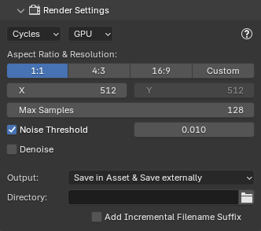
Here, you'll find settings for the render engine, aspect ratio, resolution, and other Blender default render settings you're likely already familiar with.
Tip for Asset Preview Resolution
When rendering images to use as previews for the Assets themselves, the previews saved inside the Asset are limited to 256x256 pixels. With that said, the recommended render resolution is 512x512, which improves overall sharpness even if saved at a lower resolution afterward. This offers an improvement over Blender's default Asset Preview resolution of 128x128 pixels.
-
Output: Determines where your rendered images are saved. You can choose between:
- Save in Asset: to save images within the Blender file.
- Save in Asset & Save Externally: to save both within the file and as separate external files.
- Save Only External: to save images only as external files.
-
Add Incremental Filename Suffix: When saving asset previews externally, this feature automatically appends an incrementing number to the end of filenames, ensuring each version is saved without overwriting previous files. This allows you to quickly iterate renders with various settings. For example, if your object is named "Suzanne", the rendered images will be saved as "Suzanne [1]", "Suzanne [2]", and so on.
More render settings
These render settings are copied from your current scene, and you can edit them by going to the Render tab in the Properties panel to make your desired changes.
Cycles:
- Light Paths: All settings.
- Volumes:
Step Rate Render&Max Steps. - Subdivsion:
Dicing Rate Render.
EEVEE:
- Shadows: All settings are copied except for enabling or disabling, which is controlled within the BatchGenie Render Settings. Also the
World > Settings > Sunsettings are copied except for enabling or disabling the shadow, which is also controlled within the BatchGenie Render Settings. - Raytracing: All settings are copied except for enabling or disabling, which is controlled within the BatchGenie Render Settings.
- Volumes: All settings.
- Performance:
High Quality Normals.
Shared Settings:
- Color Management:
View Transform&Look.
FAQ¶
How fast is the rendering with BatchGenie?-
Rendering speed depends on your system's performance and the chosen settings. BatchGenie doesn't modify or accelerate the rendering process, it uses Blender's standard workflow. However, with default settings, most Asset Previews should render in around 1 second.
Can I add custom lights to the Lighting Setups?-
Yes! The list can be expanded by directly adding your own HDRIs to Blender via
Preferences > Lights > HDRI'swhich makes them available in this list. I'm having slow rendering speeds in Cycles. What can I do?-
Besides adjusting the sample settings under the render settings in the BatchGenie panel, consider tweaking the following settings in Blender’s default
Rendertab in the Properties panel. These settings are copied from your scene when rendering:- Decrease the light paths under
Render > Light Paths. - For volumes/VDB rendering, check
Render > Volumesand adjust theStep Rate RenderandMax Steps. Increasing theStep Rate Rendercan significantly speed up renders. For Asset Previews, settingStep Rate Renderto 5 or higher can halve render times compared to the default 1, without losing visible detail at that scale. If you're rendering for external use, you may need to balance the minor loss in detail against the improved speed. - If using Adaptive Subdivision for models, adjust the
Dicing Rate Renderin your scene. Ensure the "Experimental" Feature Set is enabled underRender > Feature Set. Then, increase theDicing Rate Rendervalue underRender > Subdivision.
- Decrease the light paths under
I'm experiencing unusual behavior with object location when using the Studio Setups. What should I do?-
Try applying the Scale and Rotation transformations to your object(s). This should resolve the issue.
Why doesn't my render match the View when using the 'View Camera Override' function?-
Adjust the View camera to match the rendering focal length. For example, if the default focal length under 'Render Settings' is 90mm, go to
3D View > View > Viewand match it. I can't find my saved custom presets after upgrading Blender to a new major version.-
When upgrading to a new major version (e.g., from 4.2 to 4.3), you need to manually transfer your presets.
To do this, go to the Preferences menu and click the "Open Custom Presets Folder" button. Copy all the files from that folder. If you still have the previous version of Blender installed, you can transfer your presets either before or after upgrading. Simply use the old version to copy the presets and paste them into the new version after the upgrade.
Example: from
...\Blender\4.2\extensions\user_default\BatchGenie\presets\customto...\Blender\4.3\extensions\user_default\BatchGenie\presets\customFor minor upgrades (e.g., from 4.2.1 to 4.2.2), no manual transfer is needed, as your presets will be preserved.
More adjustments in Preferences¶
See the add-on Preferences for more settings related to rendering.